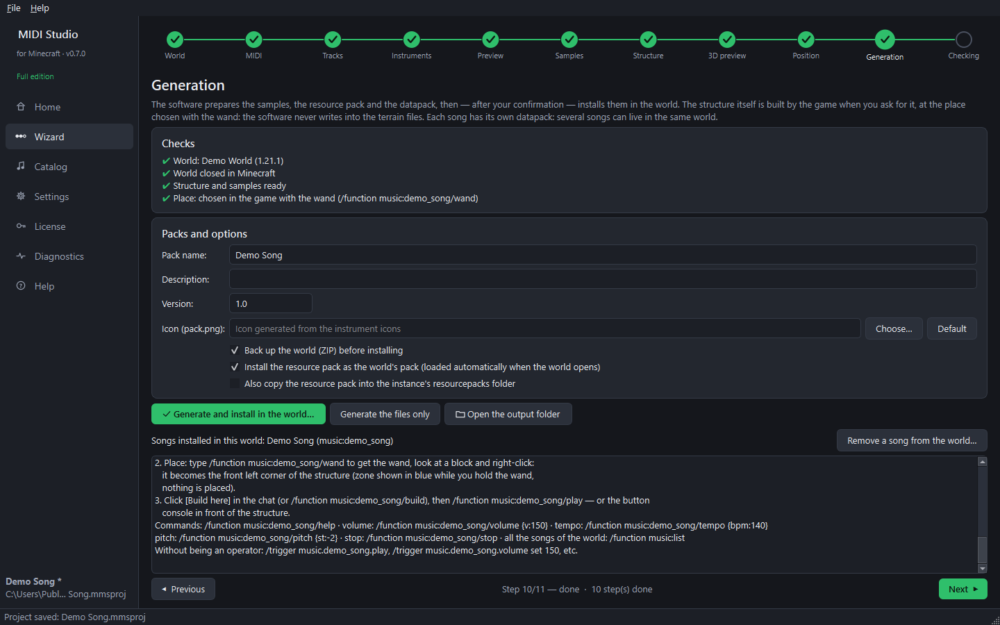

Turn any MIDI file into music played in your Minecraft Java world.
Samples prepared note by note, a generated resource pack, a structure of rails and minecarts that light up the blocks in time with the music, and in-game controls. No mod needed.

What it does
🎵 Clean sound
One sample per note: Minecraft never changes the pitch of a sound, so chords and melodies stay in tune.
🛤️ A real show
Powered rails, minecarts that reach the trigger line exactly on their note, coloured blocks that flash, a lava pit and a button console.
🎛️ In-game controls
Play, pause, stop, volume (10–500 %), tempo, pitch, speed and seek, with commands, /trigger or the buttons of the console.
🧭 Step by step
An 11-step wizard: world, MIDI, tracks, instruments, preview, samples, structure, 3D preview, position, generation, check.
🔒 Safe for your worlds
A ZIP backup before any change, nothing ever deleted, and an explicit confirmation before writing anything.
🌍 English & French
The software, the datapack messages and the resource pack follow the language you choose.
How it works
- Choose a world and a MIDI file.
- Pick the instruments and listen to the Minecraft result.
- Generate: the packs are installed in the world, then type /function music:build and /function music:play.
Free and full editions
| Free | Full | |
|---|---|---|
| Song length | first 20 s | unlimited |
| Tracks | 3 | unlimited |
| Notes played | 300 | unlimited |
| Note block instruments | 8 basic ones | all 16 + custom sounds |
| Mob sounds | voices of 3 farm animals | all mobs of your version |
| Custom optimisation profile | — | ✔ |
| Export for a server | — | ✔ |
| Message in the chat | “free edition” | — |
| Slowing the music down in the game | never below the original speed | ✔ |
One-time purchase, no subscription. The license is tied to your Google account: activate it once with a Google sign-in, then it works offline. On another computer, just sign in again.
Guides
Step-by-step guides with screenshots. Each one is also available as a PDF.
Questions
Which Minecraft versions?
Java Edition. Reference version 1.21.1; 26.x worlds are supported (the datapack was tested on 1.21.1 and 26.1.2 servers).
Do I need a mod?
No. Everything is vanilla: a datapack and a resource pack.
Where do the sounds come from?
From Minecraft (they belong to Mojang). The software uses your installation, or downloads the official files from Mojang's servers itself, like a launcher (about 41 MB, once). Nothing from Minecraft is shipped with the software, and Note Block Studio is not needed.
Does it work on servers?
Yes (full edition): export the packs and follow the server guide.
Can I share my license?
No: a key only works with the Google account it was bought for. You can use it on all your own computers.
Is my data sent anywhere?
Nothing is ever sent to the author. The software only contacts Mojang (official sounds) and Google (when you activate the full edition). See the Privacy page.